Patru căderi într-o lună
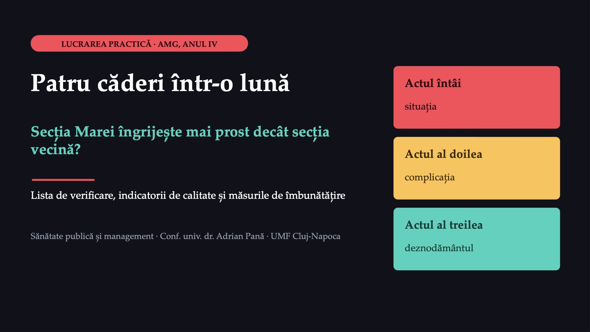
1 / 31Două ore, trei acte, un singur caz
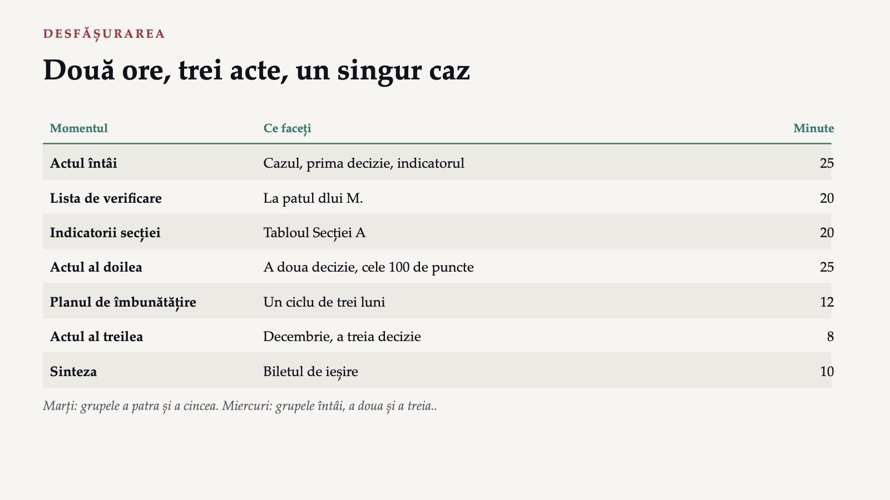
2 / 31La finalul lucrării veți putea
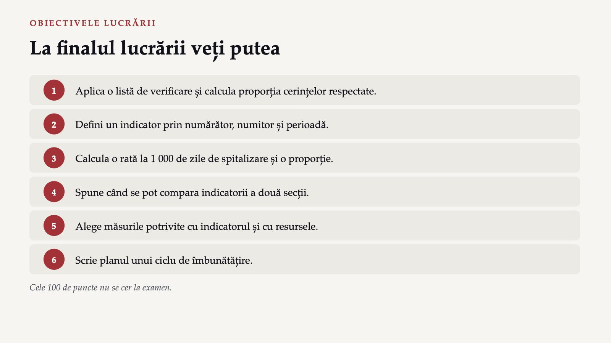
3 / 31Tabloul din septembrie
 4 / 31
4 / 31Ce poate spune Mara despre siguranța Secției A?
![MENTIMETER DECIZIA 1 · PRIMUL VOT Ce poate spune Mara despre siguranța Secției A? A Secția A este mai puțin sigură: are de patru ori mai multe căderi. B Se compară ratele căderilor la 1 000 de zile de spitalizare și se trage concluzia din ele. C Se compară ratele, dar întâi se verifică dacă secțiile definesc și raportează căderile la fel și dacă au pacienți cu riscuri asemănătoare. D Numărul căderilor nu spune nimic: indicatorul se abandonează. [codul QR Mentimeter] Răspundeți pe telefon, la codul afișat.](diapozitive/LP04/005.jpg) 5 / 31
5 / 31Convingeți-l pe colegul care a votat altfel
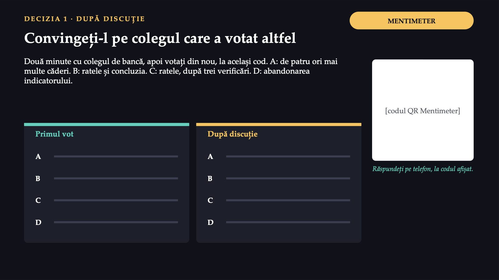
6 / 31Trei părți, spuse în cuvinte înainte de calcul
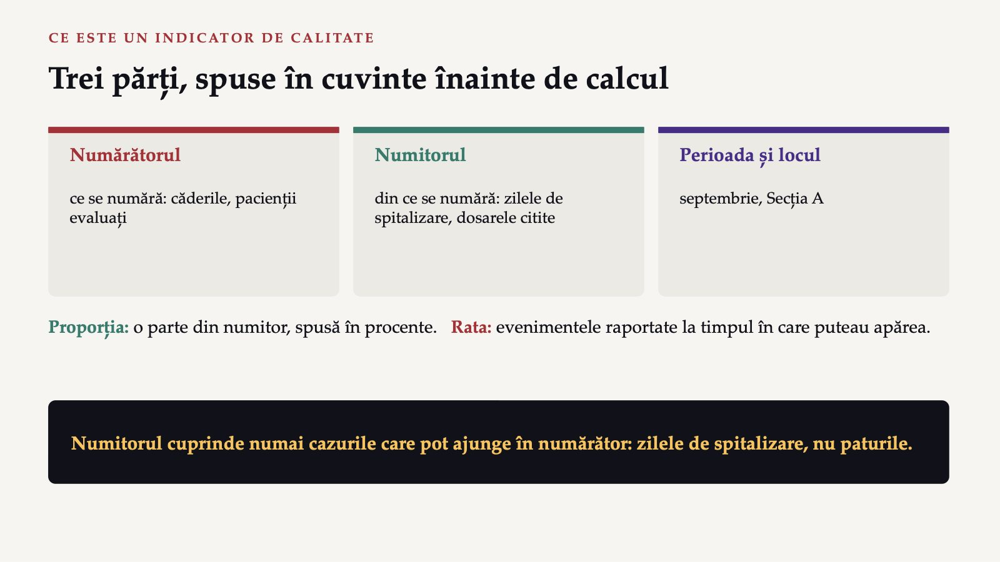
7 / 314,9
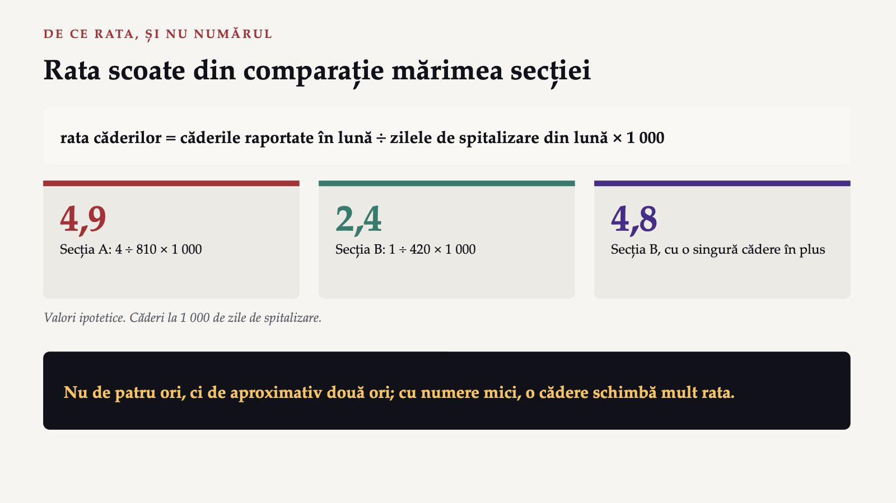
8 / 317,1%
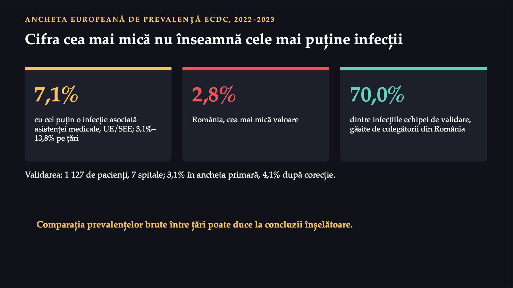
9 / 31Ratele întâi, apoi trei verificări
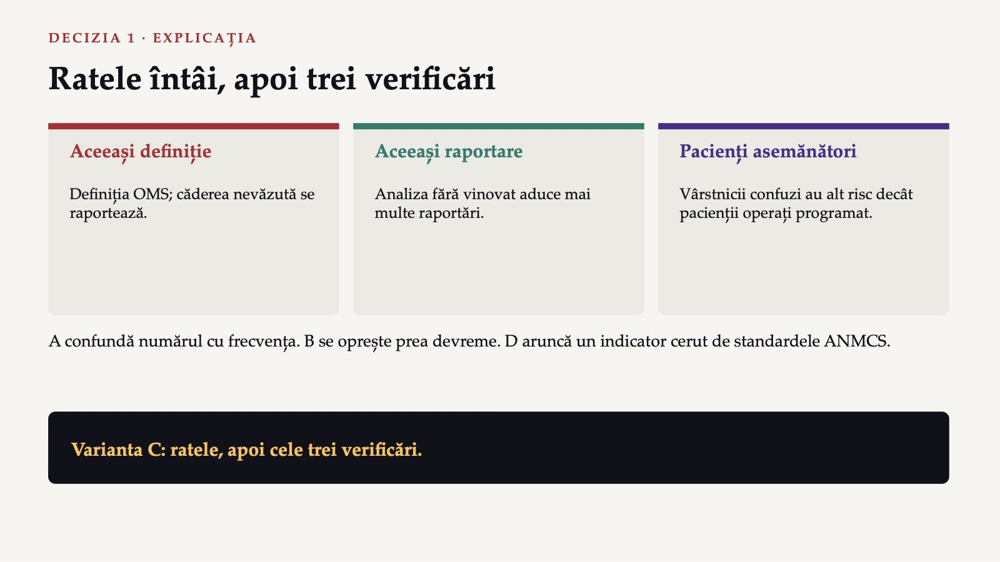
10 / 31Zece cerințe la patul pacientului
![LISTA DE VERIFICARE · CONVENȚIE A LUCRĂRII Zece cerințe la patul pacientului 1 Brățara, cu doi identificatori 2 Riscul de cădere evaluat multifactorial în 24 de ore 3 Patul jos, frânele blocate 4 Soneria la îndemână 5 Lumina de noapte funcționează 6 Pacientul și familia informați 7 Riscul de escare evaluat la internare 8 Planul de schimbare a poziției, la risc de escare 9 Igiena mâinilor înainte de contact 10 Data montării cateterului Termenul de 24 de ore: procedura secției. Fiecare cerință: „da”, „nu” sau „nu se aplică”.](diapozitive/LP04/011.jpg) 11 / 31
11 / 31Dl M., 82 de ani, în a doua zi de internare
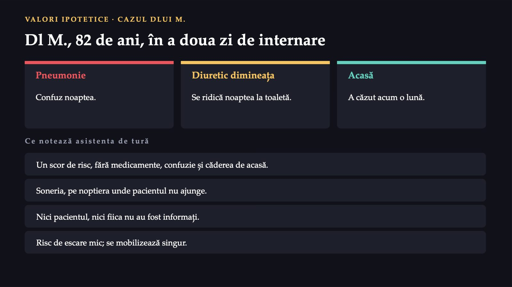
12 / 31Bifați lista la patul dlui M.
![FORMS PASUL 1 · LISTA DE VERIFICARE Bifați lista la patul dlui M. 1 Singuri, cinci minute: „da”, „nu” sau „nu se aplică”, cu un rând de justificare. 2 În echipă: cădeți de acord și calculați proporția cerințelor respectate. 3 Alegeți cerința nerespectată pe care o corectați prima și spuneți de ce. Proporția = cerințele „da” ÷ cerințele „da” sau „nu” × 100 Cerințele care nu se aplică nu intră nici în numărător, nici în numitor. [QR FORMULAR] Răspundeți pe telefon, la codul afișat.](diapozitive/LP04/013.jpg) 13 / 31
13 / 31Rezolvarea se vede în formularul fișei, după ce o predați.
Rezolvarea se vede în formularul fișei, după ce o predați.
39
![INDICATORII SENSIBILI LA ÎNGRIJIRILE DE NURSING De ce urmărește Mara căderile, escarele și infecțiile 39 de studii, în revizia sistematică 1997–2017; raportate cel mai des: personalul, mortalitatea, infecțiile nosocomiale 15% din cheltuielile și activitatea spitalelor OCDE, pentru remedierea eșecurilor de siguranță (raport OCDE din 2017) Povara vine mai ales din câteva evenimente adverse frecvente: infecțiile, tromboembolismul venos, escarele, erorile de medicație, diagnosticele greșite. Infecțiile, escarele și erorile de medicație țin în mare măsură de îngrijirile de nursing.](diapozitive/LP04/015.jpg) 15 / 31
15 / 31Șase indicatori pentru septembrie
![FORMS PASUL 2 · TABLOUL SECȚIEI A Șase indicatori pentru septembrie Indicatorul Tipul Numărătorul ÷ numitorul Valorile Rata căderilor rezultat căderi ÷ zile 4 și 810 Escarele în spital rezultat escare noi ÷ internări 3 și 135 Evaluarea riscului de cădere proces evaluări ÷ dosare 26 și 40 Evaluarea riscului de escare proces evaluări ÷ dosare 30 și 40 Igiena mâinilor proces respectate ÷ observate 78 și 120 Infecțiile, ziua anchetei rezultat cu infecție ÷ internați 1 și 27 Valori ipotetice. Dosarele: peste 65 de ani. [QR FORMULAR] Răspundeți pe telefon, la codul afișat.](diapozitive/LP04/016.jpg) 16 / 31
16 / 31Rezolvarea se vede în formularul fișei, după ce o predați.
Rezolvarea se vede în formularul fișei, după ce o predați.
Managerul acceptă analiza, dar resursele sunt limitate
 18 / 31
18 / 31Ce indicator urmăriți în primul ciclu de trei luni?
![MENTIMETER DECIZIA 2 · PRIMUL VOT Ce indicator urmăriți în primul ciclu de trei luni? A Rata căderilor. B Proporția pacienților de peste 65 de ani la care riscul de cădere a fost evaluat multifactorial în primele 24 de ore. C Numărul saltelelor pentru prevenirea escarelor de pe secție. D Proporția pacienților la care scorul de risc de cădere este completat în foaia de observație. [codul QR Mentimeter] Răspundeți pe telefon, la codul afișat. După acest indicator, Mara va ști dacă planul a funcționat. Votați singuri.](diapozitive/LP04/019.jpg) 19 / 31
19 / 31Ce ar schimba colegul vostru de bancă?
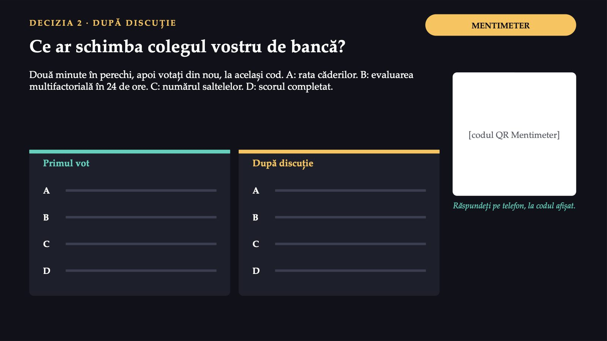
20 / 31Procesul se schimbă și se măsoară în trei luni
![DECIZIA 2 · EXPLICAȚIA Procesul se schimbă și se măsoară în trei luni A · Rata căderilor Rezultat, cu numere mici: indicatorii de rezultat cer eșantioane mari și timp. B · Evaluarea multifactorială Proces: recomandarea ghidurilor pentru vârstnicii spitalizați; se măsoară lunar, din dosare. C · Numărul saltelelor Structură: arată că resursa există, nu că ajunge la pacientul potrivit. D · Scorul completat Măsoară o rubrică; ghidurile recomandă să nu se folosească scoruri în spitale. Varianta B. Rata căderilor se urmărește în continuare, dar ciclul se judecă după proces.](diapozitive/LP04/021.jpg) 21 / 31
21 / 31Împărțiți 100 de puncte între cinci măsuri
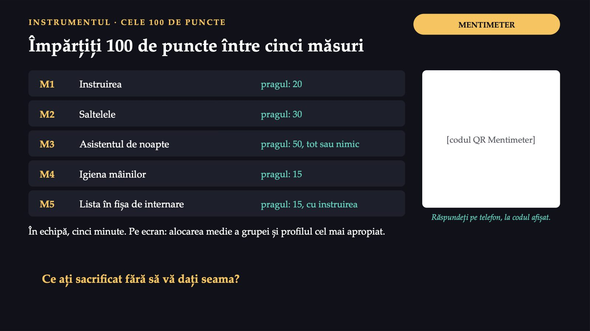
22 / 31Ce aduce fiecare alocare
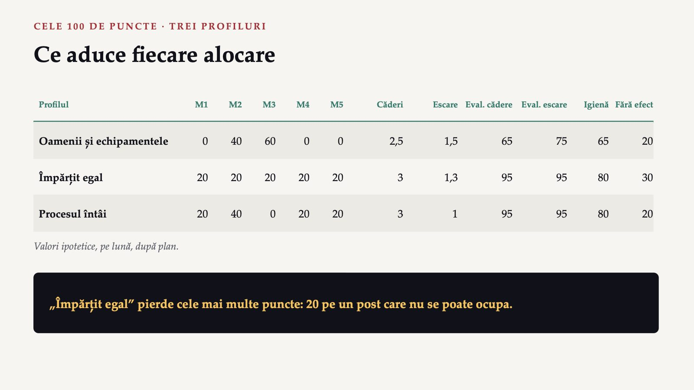
23 / 31Un ciclu de trei luni pentru evaluarea riscului
![FORMS PASUL 3 · PLANUL DE ÎMBUNĂTĂȚIRE Un ciclu de trei luni pentru evaluarea riscului 1 Problema și valoarea inițială, din tablou. 2 Obiectivul, cu țintă și termen. 3 Schimbarea, întâi la scară mică, cu responsabilul ei. 4 Măsurătoarea: același numărător, același numitor, lunar. 5 Decizia: se păstrează, se modifică, se extinde sau se oprește. Standardele ANMCS: obiective, valori inițiale și măsuri care permit evaluarea schimbării. Două echipe își verifică reciproc măsurătoarea. [QR FORMULAR] Răspundeți pe telefon, la codul afișat.](diapozitive/LP04/024.jpg) 24 / 31
24 / 31Rezolvarea se vede în formularul fișei, după ce o predați.
Rezolvarea se vede în formularul fișei, după ce o predați.
90%
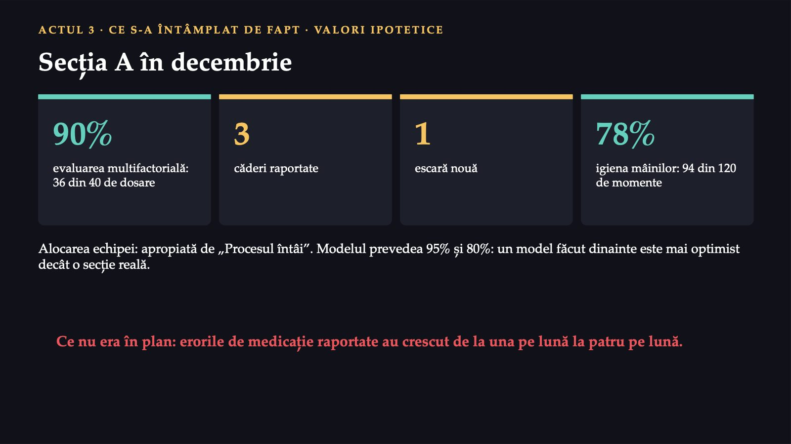
26 / 31Ce a confirmat decembrie
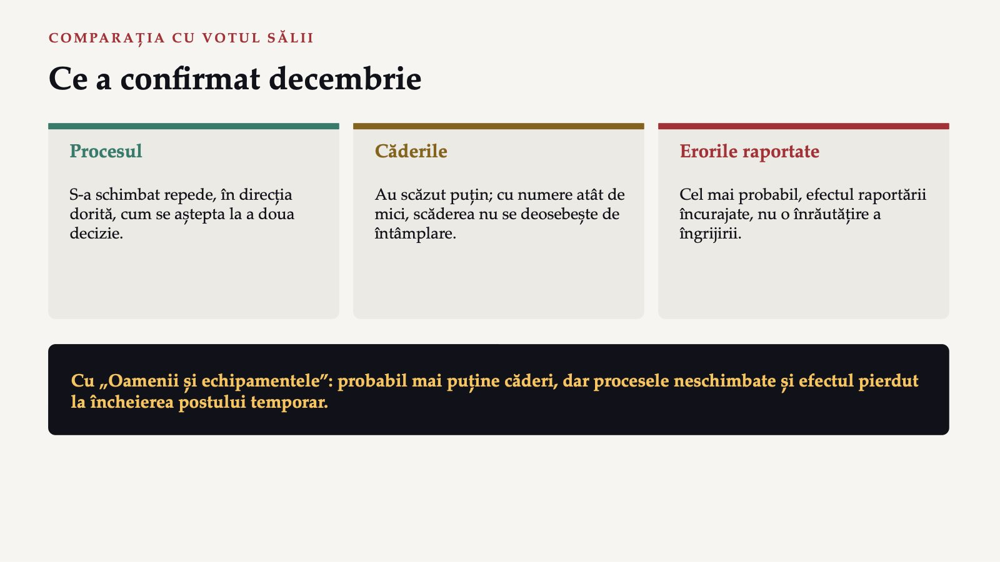
27 / 31Secția B: erorile raportate cresc de la una la cinci pe lună
![MENTIMETER DECIZIA 3 · O VARIANTĂ A CAZULUI Secția B: erorile raportate cresc de la una la cinci pe lună După o campanie de raportare fără teamă. Ce concluzie trage directorul? A Siguranța medicației s-a înrăutățit; campania trebuie oprită. B Raportarea s-a schimbat: seria nu se compară înainte și după, iar siguranța se judecă printr-o a doua sursă și prin analiza fiecărui eveniment. C Erorile s-au înmulțit de cinci ori; personalul trebuie sancționat. D Indicatorul nu mai are valoare și se abandonează. [codul QR Mentimeter] Răspundeți pe telefon, la codul afișat.](diapozitive/LP04/028.jpg) 28 / 31
28 / 31Raportarea s-a schimbat, nu neapărat siguranța
![DECIZIA 3 · EXPLICAȚIA Raportarea s-a schimbat, nu neapărat siguranța Analiza fiecărui eveniment Standardele ANMCS: evenimentele adverse și incidentele near miss se raportează și se analizează; concluziile previn recurența. A doua sursă Observarea directă a administrărilor sau citirea dosarelor permite comparația pe care seria raportărilor nu o mai permite. În validarea românească a anchetei ECDC, culegătorii găsiseră 70,0% dintre infecțiile identificate de echipa de validare. Varianta B. Oprirea campaniei sau sancțiunea ar scădea raportarea, nu erorile.](diapozitive/LP04/029.jpg) 29 / 31
29 / 31Din câți? Raportat la fel?
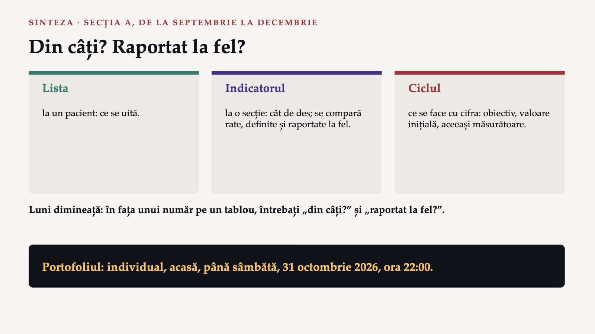
30 / 31Trei întrebări pentru final
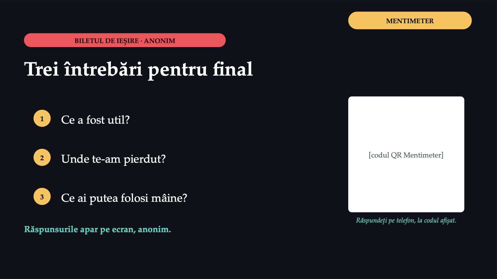
31 / 31Săgeți sau spațiu: navigare · O: vedere de ansamblu · N: notele prezentatorului · F: ecran complet · Esc: închidere